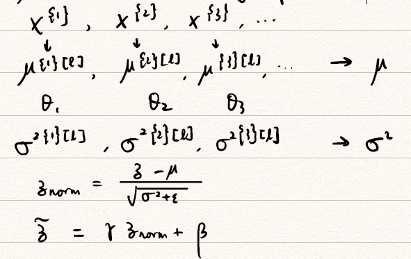

这个专项课程一共五门，包括
- Neural Networks and Deep Learning（神经网络与深度学习）
- Improving Deep Neural Networks: Hyperparameter Tuning, Regularization and Optimization（改进深度神经网络：超参数、正则化和优化）
- Structuring Machine Learning Projects（构建机器学习项目）
- Convolution Neural Networks（卷积神经网络）
- Sequence Model（序列模型）
部分内容参考了左老板的博客（http://www.cyzuo.cn/）
Improving Deep Neural Networks 学习笔记
第二门课程的主体框架：
- Week 1: Practical aspects of DL
- Setting up your Machine learning Application
- Regularizing your NN
- Setting up your optimization problem
- Week 2: Optimization algorithms
- Week 3: Hyperparameter tuning, Batch Normalization, Programming frameworks
- Hyperparameter tuning
- Batch Normalization
- Multi-class classification
- Programming frameworks
Week 1
1-1 Setting up your Machine learning Application
在这个section里面主要讨论的是机器学习中基本的性能度量和评价指标。主要谈到了这两点：
- Training/dev/Test sets（训练集/验证集（开发集）/测试集）
- Bias/Variance（偏差和方差）
1. Training/dev/Test sets
Applied ML is a highly iterative process.（应用机器学习是一个高度重复的过程）
Train/dev/Test sets的划分

Mismatched train/test distribution
- 验证集要和训练集来自于同一个分布（数据来源一致），可以使得机器学习算法变得更快并获得更好的效果。
- 同时，没有测试集是可以的，但是不能没有验证集用于交叉验证。

2. Bias/Variance
下面通过图片和数据两种方式形象地展示在机器学习中偏差(Bias)和方差(Variance)指什么，过拟合(overfitting)和欠拟合(underfitting)。
- 偏差(Bias)：度量了学习算法的期望预测与真实结果的偏离程度，即刻画了学习算法本身的拟合能力；
- 方差(Variance)：度量了同样大小的训练集的变动所导致的学习性能的变化，即刻画了数据扰动所造成的影响；
- 噪声(noise)：表达了在当前任务上任何学习算法所能够达到的期望泛化误差的下界，即刻画了学习问题本身的难度。
- 过拟合(overfitting)：模型过分地契合训练集，但泛化能力不够。
- 欠拟合(underfitting)：模型和真实情况还有较大偏差
从坐标图像角度来看：

从数据角度来看：
| 数据 | 1 | 2 | 3 | 4 |
|---|---|---|---|---|
| 测试集错误率 | 1% | 15% | 15% | 0.5% |
| 验证集错误率 | 11% | 16% | 30% | 1% |
| 存在的问题 | 验证集和测试集错误率相差很大 | 验证集和测试集错误率相差不大，但是错误率都比较高 | 验证集和测试集错误率相差大，同时错误率比较高 | 验证集和测试集错误率相差不大，错误率都比较低 |
| Bias/Variance分析 | high variance (overfitting) | high bias (underfitting) | high bias & high variance | low bias & low variance |
同时，我们将最优误差(optimal error)也称为贝叶斯误差(Bayes error)，一般取$\approx 0$。
3. Basic Recipe for ML

对于以前的Bias-variance trade-off（偏差方差均衡），则是由于过去无法控制单个Bias或是variance，使得只减少偏差或方差而不影响到另外一方。而在大数据时代不需要去考虑均衡问题。
1-2 Regularizing your NN
本section主要讲述正则化的原理与相关方法。正则化是为了解决过大的方差而提出的。主要思想就是引入一个正则项防止模型过于复杂，导致过拟合。
1. Regularization & Why？
对Logistic Regression的正则化
$$
\begin{gathered}
\min\ J(w,b)\qquad w\in\mathbb{R}^{n_x},b\in\mathbb{R}\
J(w,b)=\frac 1m\sum_{i=1}^m\mathscr{L}(\hat y^{(i)},y^{(i)})+\boldsymbol{\frac{\lambda}{2m}||w||2^2}\underbrace{+\frac{\lambda}{2m}b^2}{\text{omit}}
\end{gathered}
$$
注意加粗项 $\frac{\lambda}{2m}||w||_2^2$ 即为我们引入的正则项，其中$\lambda$被称为正则因子，是一个超参数。上式中我们采用的是L2 正则化（L2范数），下面介绍两种不同的范数可以替代上述损失函数$J(w,b)$中的范数。- L2正则化（L2范数）：$||w||2^2=\sum{j=1}^{n_x}w_j^2=\mathbf{w}^T\mathbf{w}$
- L1正则化（L1范数）：$||w||1=\sum{j=1}^{n_x}|w|$
对于神经网络的正则化
- 损失代价函数
$$
J\left(w^{[1]}, b^{[1]}, \ldots, w^{[L]}, b^{[L]}\right)=\frac{1}{m} \sum_{i=1}^{m} L\left(\hat{y}^{(i)}, y^{(i)}\right)+\frac{\lambda}{2 m} \sum_{l=1}^{L}\left|w^{[l]}\right|{F}^{2}
$$
这里将范数项取Frobenius范数，又$w$的大小为 $\left(n^{[l-1]}, n^{[l]}\right)$，故
$$
\left|w^{[l]}\right|{F}^{2}=\sum_{i=1}^{n^{[l-1]}} \sum_{j=1}^{n [l]}\left(w_{i j}^{[l]}\right)^{2}
$$- 反向传播中权重衰减为
$$
\left{\begin{array}{l}dw^{[l]}=\mathtt{(from_back_prop.)}+\boldsymbol{\frac{\lambda}{m}w^{[l]}}\
w^{[l]}:=w^{[l]}-\alpha dw^{[l]}
\end{array}\right.
$$
将两个式子合并起来，得到权重衰减(weight-decay)为
$$
w^{[l]}:=w^{[l]}-\alpha \mathtt{(from_back_prop.)}-\alpha{\frac{\lambda}{m}w^{[l]}}
$$为什么正则化能防止过拟合？
$$
J\left(w^{[1]}, b^{[1]}, \ldots, w^{[L]}, b^{[L]}\right)=\frac{1}{m} \sum_{i=1}^{m} L\left(\hat{y}^{(i)}, y^{(i)}\right)+\frac{\lambda}{2 m} \sum_{l=1}^{L}\left|w^{[l]}\right|_{F}^{2}
$$当$\lambda\to \infty$时，权重$w^{[l]}\to 0$，此时每个神经元都很小，则隐层是无用的，也就退化为了单层的Logistic Regression。
用tanh函数来解释的话，

当$\lambda\nearrow$，则权重$w^{[l]}\searrow$，又$z^{[l]}=w^{[l]}a^{[l-1]}+b^{[l]}$，当$\lambda$相当大时，$w^{[l]}$相当小，此时用到了tanh的线性段，即$a^{[l]}=g^{[l]}(z^{[l]})$是近乎线性的。当每一层都近乎线性时，整个神经网络都是线性的也就不存在过拟合一说了。

2. Dropout Regularization
Dropout的概念与操作
概念

dropout（随机失活）是在神经网络的隐藏层为每个神经元结点设置一个随机消除的概率，保留下来的神经元形成一个结点较少、规模较小的网络用于训练。
操作——Inverted dropout
假设我们在第3层应用dropout，并将0.2的神经元抛弃，即
keep.prob<0.81
2
3
4
5keep.prob = 0.8 # 保留率为0.8
d3 = np.random.rand(a3, shape[0], a3.shape[1]) < keep.prob
# 0.8的概率被保留，0.2的概率被dropout，其中np.random.rand表示0-1分布
a3 = np.multiply(a3, d3) # 实现a3和d3的相乘
a3 /= keep.prob # 恢复期望值，确保a3的期望值不变注意：
- 每次应当dropout不同的元素
- 不要在test期间进行dropout，这对模型的优化无意义，反而会增加噪声。
Dropout的解释
- 解释1：就像在更小的NN上训练，⽤更⼩的NN好像具有Regularization的作用。
- 解释2：由于dropout的存在，神经网络不能依赖于任何单独一个特征，所以会将权重分散开来，因此，通过传播过程，dropout 将产生和 L2 正则化相同的shrink weights(收缩权重)的效果。
- 注意：
- 对于不同的层，设置的
keep.prob也可以不同。当你担心某一层比其他层更有可能过拟合了，那么你可以对那层设置一个更小的keep.prob值。 - 由于图像网络很庞大，故在CV领域使用较多
- dropout由于随机抛弃一些神经元，不能采用画图的方式来判定$J$，也无法确保无法确保成本函数单调递减。
- 对于不同的层，设置的

3. Other Regularization methods
Data argument（数据量的扩大）
- flipping（翻折）
- random crop（随机裁剪），但可能导致关键部分被裁剪
- random rotations（随机旋转）
- distortion（扭曲）
Early Stopping
可以采用Early Stopping来替代L2正则化
训练集和验证集进行梯度下降时的成本变化曲线画在同一个坐标轴内，当训练集误差降低但验证集误差升高，两者开始发生较大偏差时及时停止迭代，并返回具有最小验证集误差的连接权和阈值，以避免过拟合。这种方法的缺点是无法同时达成偏差和方差的最优。


1-3 Setting up your optimization problem
1. Normalizing inputs
Normalizing inputs（标准化输入）的方法
【S1】 Subtract mean（将数据移到原点位置）
$$
\begin{gathered}
\mu=\frac 1m\sum_{i=1}^mx^{(i)}\
x:=x-\mu
\end{gathered}
$$
【S2】Normalize variance（⽅差标准化）
$$
\begin{gathered}
\sigma^2=\frac 1m \sum_{i=1}^{m}x^{(i)2}\
x/=\sigma\
x:=\frac{x-\mu}{\sigma}
\end{gathered}
$$
注意：请使用相同的$\mu,\sigma^2$来标准化测试集。为何需要Normalizing inputs？
在不使用归一化的代价函数中，如果我们设置一个较小的学习率，那么很可能我们需要很多次迭代才能到达代价函数全局最优解；如果使用了归一化，那么无论从哪个位置开始迭代，我们都能以相对很少的迭代次数找到全局最优解，也可以选择更大的步长。


2. Vanishing/Exploding gradients

Vanishing/Exploding gradients
假设$g(z)=z$，$b^{[l]}=0$，则上述网络输出为$\hat y=w^{[L]}w^{[L-1]}\cdots w^{[2]}w^{[1]}x$
- 若$w^{[l]}=\begin{bmatrix}1.5& 0\ 0& 1.5\end{bmatrix}$，则$\hat y=w^{[L]}\begin{bmatrix}1.5& 0\ 0& 1.5\end{bmatrix}^{L-1}x\to 1.5^{L-1}x$，则发生了Exploding gradients
- 若$w^{[l]}=\begin{bmatrix}0.5& 0\ 0& 0.5\end{bmatrix}$，则$\hat y=w^{[L]}\begin{bmatrix}0.5& 0\ 0& 0.5\end{bmatrix}^{L-1}x\to 0.5^{L-1}x$，则发生了Vanishing gradients
在梯度函数上出现的以指数级递增或者递减的情况分别称为梯度爆炸(Exploding gradients)或者梯度消失(Vanishin gradients。
更一般的来说
$$
\left{\begin{array}{l}w^{[l]} >\mathbf{I}\w^{[l]}<\mathbf{I} \end{array} \right.\xrightarrow{\text{很深}} \begin{array}{l}\text{exploding}\\text{decrease exponatially}\end{array}
$$所以需要小心谨慎地取权重的初值。
Weight Initialization for Deep network

当输入的数量 $n$ 较大时，我们希望每个 $w_i$ 的值都小一些，这样它们的和得到的 $z$ 也较小。为了得到较小的 $w_i$，我们设置 $Var(w_i)=\frac{2}{n}$，即
$$
w^{[L]}=\mathtt{np.random.randn(shape)}*\mathtt{np.sqrt}\left(\frac{2}{n^{L-1}}\right)
$$
这样，激活函数ReLU的输入 $x $近似设置成均值为 $0$，标准方差为 $1$，神经元输出 $z$ 的方差就正则化到 $1$ 了。虽然没有解决梯度消失和爆炸的问题，但其在一定程度上确实减缓了梯度消失和爆炸的速度。对于其他的activation function也有类似的初始化方式：
- tanh：$\sqrt{\frac{1}{n^{[l-1]}}}$，这也被称为Xavier initialization
- 另外有$\sqrt{\frac2{n^{[l-1]}+n^{[l]}}}$

4. Gradient Checking
梯度数值的逼近
我们使用双侧差值来求解梯度，即倒数的定义。
$$
f’(\theta)=\lim_{\varepsilon\to 0}\frac{f(\theta+\varepsilon)-f(\theta-\varepsilon)}{2\varepsilon}
$$Gradient Checking的实现
将$W^{[1]},b^{[1]},\cdots, W^{[L]},b^{[L]}$首尾连接，成为一个大的向量$\theta$。
$$
J(W^{[1]},b^{[1]},\cdots, W^{[L]},b^{[L]})=J(\theta)
$$将$dW^{[1]},db^{[1]},\cdots, dW^{[L]},db^{[L]}$首尾连接，成为一个大的向量$d\theta$。它与$\theta$是同型的。
for each $i$:
$$
\begin{aligned}
d\theta_\text{approx}[i]=& \frac{J(\theta_1,\theta_2,\cdots,\theta_i+\varepsilon,\cdots)-f(\theta_1,\theta_2,\cdots,\theta_i-\varepsilon,\cdots)}{2\varepsilon}\
\approx &d\theta[i]=\frac{\partial J}{\partial \theta_i}
\end{aligned}
$$用梯度检验值
$$
\frac{||d\theta_\text{approx} -d\theta ||_2}{||d\theta_\text{approx} ||_2+||d\theta ||_2}\triangleq(*)
$$对于$\varepsilon=10^{-7}$
- 如果
(*)小于$10^{-7}$ 则一般没有问题 - 如果
(*)为 $10^{-5}$的量级，则可以考虑一下是否出现了bug - 如果
(*)大于$ 10^{-3}$ 的量级，则大概率存在 bug
- 如果
注意：
- Don’t use in training. Only to debug.
- If algorithm fails grad check, look at components to identify bug.（即确定哪个$d\theta_\text{approx}$与$d\theta$相距较远）
- Remember regularization.
- Doesn’t use with dropout, make sure
keep.prob = 1.0. - Run at random initialization, perhaps again after some training.
Week 2
Optimization algorithms
1. Mini-batch gradient descent
batch 梯度下降法（批梯度下降法）是最常用的梯度下降形式，即同时处理整个训练集。其在更新参数时使用所有的样本来进行更新。
对整个训练集进行梯度下降法的时候，我们必须处理整个训练数据集，然后才能进行一步梯度下降，即每一步梯度下降法需要对整个训练集进行一次处理，如果训练数据集很大的时候，处理速度就会比较慢。
但是如果每次处理训练数据的一部分即进行梯度下降法，则我们的算法速度会执行的更快。而处理的这些一小部分训练子集即称为 mini-batch。
vectorization allows you to efficiently compute on $m$ examples
- $x^{(1)}$：第$i$个example
- $z^{[l]}$：第$l$层layer
- $X^,Y^$：第$t$个mini-batch
举个栗子：数据量$m=5,000,000$，要将其划分成每份1000大小的mini-batch，可以描述为

Mini-batch gradient descent

从上述mini-batch gradient descent中可以看到，对于5,000,000的训练集我们将其分为5000个mini-batch，每个mini-batch有1000个数据。在红色大括号围起来的部分被称为一个epoch，只对mini-batch做一次梯度下降，并更新参数和代价函数。显然对整个训练集做一次梯度下降，需要的时间显然比一次epoch的时间来的多，这也就是我们引入mini-batch的原因。
size of mini-batch
- 首先思考使用mini-batch是否会对梯度下降带来影响呢？很显然，mini-batch相较于对整个训练集训练其实是一个随机的抽取，必定会带来代价函数$J$的震荡，但鉴于时间代价，使用mini-batch还是值得的。对整个训练集梯度下降和使用mini-batch梯度下降的区别可以用下图表现。

- 下面分析选取不同mini-batch尺寸对梯度下降的影响：
- 若mini-batch的大小为$m$，实际上就是对整个训练集进行梯度下降，此时$(X^,Y^)=(X,Y)$，这样每次迭代显然会消耗大量的时间。
- 若mini-batch的大小为1，这就退化为了随机梯度下降，此时每个样本都是一个mini-batch：$(X^,Y^)=(X^{(t)} ,Y^{(t)})$，这就失去了Vectorization带来的加速。
- 所以在实际使用中，我们一般选取一个介于1和$m$的mini-batch，此时能够达到最快的学习速度，也可以使用到vectorization带来的加速。
- 对于较小的训练集（例如$m\leq 2000$），可以只用batch gradient descent，即对于整个训练集梯度下降。
- 典型的mini-batch尺寸有64，128，256，512，1024……，注意到这些值都是2的整数倍，这是为了和计算机的存储方式相匹配。
- 最后mini-batch的大小要适应于CPU、GPU的容量。
- 首先思考使用mini-batch是否会对梯度下降带来影响呢？很显然，mini-batch相较于对整个训练集训练其实是一个随机的抽取，必定会带来代价函数$J$的震荡，但鉴于时间代价，使用mini-batch还是值得的。对整个训练集梯度下降和使用mini-batch梯度下降的区别可以用下图表现。


2. Exponentially weighed(moving) averages
Exponentially weighed(moving) averages是帮助我们提高mini-batch梯度下降效率方法的预备知识。
Exponentially weighed(moving) averages（指数加权平均）的公式可以表述为
$$
V_t=\beta V_{t-1}+(1-\beta)\theta_t
$$
其中，$V_t$是拟合值，$\theta_t$是真实值。
首先通过一个例子来了解什么是Exponentially weighed averages，给定一个时间序列给例如伦敦一年每天的气温值，图中蓝色的点代表真实数据。

我们看到蓝色的点非常杂乱，为了使得曲线变得更平滑，使用上公式进行Exponentially weighed average，红绿黄线都是我们根据上述公式求得拟合曲线。我们可以大致近似$V_t$是根据$\frac 1{1-\beta}$天温度平均出来的值。
- 当$\beta=0.9$时，我们可以得到红色曲线，近似于根据最近10天天气得到的
- 当$\beta=0.98$时，我们可以得到绿色曲线，近似于根据最近50天天气得到的。我们可以发现相较于红线，它更加平滑，但是也有些右移的迹象。
- 当$\beta=0.5$时，我们可以得到黄色曲线，近似于根据最近2天天气得到的。可见相较于红线他的噪声非常严重。
理解Exponentially weighed averages
将上式展开
$$
\begin{aligned}
V_{100}=&0.1\theta_{100}+0.9(0.1\theta_{99}+0.9(0.1\theta_{98}+\cdots))\
=& 0.1\theta_{100}+0.1\times 0.9^1\theta_{99}+0.1\times 0.9^2\theta_{98}+\cdots+ 0.1\times 0.9^{99}\theta_1
\end{aligned}
$$这实际上就是对每天的气温乘指数衰减项(exponetially decay)，再将其相加的过程。
根据函数极限的定理：
$$
\lim_{\beta\to 0}(1-\beta)^{\frac 1\beta}=\frac 1e
$$
实际上就是经过$\frac{1}{1-\beta}$的时间，影响将下降到$\frac 1e$。
Exponentially weighed averages的实现
考虑到这是一个迭代的过程，我们可以通过以下方式进行迭代：
$V_\theta=0$
Repeat {
Get next $\theta_t$
$V_\theta:=\beta V_\theta+(1-\beta)\theta_t$
}指数加权平均数公式的好处之一在于它只需要一行代码，且占用极少内存，因此效率极高，且节省成本。但是它也会带来一定的问题，比如在前期，指数加权平均值与正常值的差距会非常大，下面我们就来讨论如何进行修正。
bias correction（误差修正）
注意到在前期计算中由于我们初始化$V_\theta$为0，会带来较大的误差。我们需要在前期减小前期数据的权重。于是，我们对上述公式进行修正
$$
V_t=\frac{V_t}{1-\beta^t}
$$
随着$t$的增大，$\beta$的$t$次方趋近于 0。因此当 t 很大的时候，偏差修正几乎没有作用，但是在前期学习可以帮助更好的预测数据。但是如果不是很关心前期值的误差的话，也可以不进行偏差修正，因为毕竟会增加一定量的计算量。
3. Two ways to reduce oscillations
Gradient descent with momentum
在进行梯度下降时，我们需要设置learning rate $\alpha$，过大的学习率会导致过头(over shooting)，Gradient descent with momentum（动量梯度下降法）是解决这一问题的方法之一。
算法
$V_{dW}=0,V_{db}=0$
On iteration t:
Compute $dW,db$ on current mini batch
$V_{dW}=\beta V_{dW}+(1-\beta)dW$
$V_{db}=\beta V_{db}+(1-\beta)db$
$W:=W-\alpha V_{dW}$
$b:=b-\alpha V_{db}$注意到在上述式子中，我们对反向传播的参数$dW,db$进行了指数加权平均，这正是减小梯度下降噪声的好方法。
至于为什么叫Gradient descent with momentum，我们可以将$\beta$看作是摩擦(friction)，$V$看作速率(velocity)，$dW,db$看作加速度(acceleration)。由于摩擦的存在，速度不可能持续增大也就保证了反向传播时步子不会迈的太大。
进行一般的梯度下降将会得到图中的蓝色曲线，由于存在上下波动，减缓了梯度下降的速度，因此只能使用一个较小的学习率进行迭代。如果用较大的学习率，结果可能会像紫色曲线一样偏离函数的范围。而使用Gradient descent with momentum时，通过累加过去的梯度值来减少抵达最小值路径上的波动，加速了收敛，因此在横轴方向下降得更快，从而得到图中红色的曲线。当前后梯度方向一致时，动量梯度下降能够加速学习；而前后梯度方向不一致时，动量梯度下降能够抑制震荡。

注意到上述式子中，$(1-\beta)$项一般是可以忽略的。同时$\alpha.\beta$是两个超参数，一般我们取$\beta=0.9$，这表明经过10次mini-batch就可以忽略前期bias的影响，不再需要bias correction。
RMSprop （root mean square prop)
RMSProp（Root Mean Square Propagation，均方根传播）算法是在对梯度进行指数加权平均的基础上，引入平方和平方根。
- 算法
$S_{dW}=0,S_{db}=0$
On iteration t:
Compute $dW,db$ on current mini batch
$S_{dW}=\beta_2 S_{dW}+(1-\beta_2)dW^2$
$S_{db}=\beta_2 S_{db}+(1-\beta_2)db^2$
$W:=W-\alpha \frac{S_{dW}}{\sqrt{S_{dW}}+\varepsilon}$
$b:=b-\alpha \frac{S_{db}}{\sqrt{S_{db}}+\varepsilon}$ - 其中，$\varepsilon$是一个较小的数字(例如$10^{-8}$)，这主要是为了防止除以0的情况。$\beta_2$是一个超参数，下标2是为了和momentum进行区分。
- RMSProp 有助于减少抵达最小值路径上的摆动，并允许使用一个更大的学习率$\alpha$，从而加快算法学习速度。
- 算法

4. Adam optimization algorithm
Adam 优化算法（Adaptive Moment Estimation，自适应矩估计）基本上就是将 Momentum 和 RMSProp 算法结合在一起，通常有超越二者单独时的效果。
算法
$V_{dW}=0,V_{db}=0,S_{dW}=0,S_{db}=0$
On iteration t:
Compute $dW,db$ on current mini batch
$$
\begin{aligned}
V_{dW}=&\beta V_{dW}+(1-\beta_1)dW\
V_{db}=&\beta V_{db}+(1-\beta_1)db\
S_{dW}=&\beta_2 S_{dW}+(1-\beta_2)dW^2\
S_{db}=&\beta_2 S_{db}+(1-\beta_2)db^2
\end{aligned}
$$
进行bias correction:
$$
\begin{aligned}
V_{dW}^\text{corrected}=&\frac{V_{dW}}{1-\beta_1^t}\
V_{db}^\text{corrected}=&\frac{V_{db}}{1-\beta_1^t}\
S_{dW}^\text{corrected}=&\frac{S_{dW}}{1-\beta_2^t}\
S_{db}^\text{corrected}=&\frac{S_{db}}{1-\beta_2^t}\
\end{aligned}
$$
更新$W,b$
$$
\begin{aligned}
W:=&W-\alpha \frac{S_{dW}^\text{corrected}}{\sqrt{S_{dW}^\text{corrected}}+\varepsilon}\
b:=&b-\alpha \frac{S_{db}^\text{corrected}}{\sqrt{S_{db}^\text{corrected}}+\varepsilon}
\end{aligned}
$$超参数：
- $\alpha$： 需要调参
- $\beta_1$：momentum的参数，一般取为0.9
- $\beta_2$：RMSprop的参数，一般取为0.999
- $\varepsilon$：一般取为$10^{-8}$
5. Learning rate decay
如果设置一个固定的学习率$\alpha$，在最小值点附近，由于不同的 batch 中存在一定的噪声，因此不会精确收敛，而是始终在最小值周围一个较大的范围内波动。而如果随着时间慢慢减少学习率$\alpha$的大小，在初期 $\alpha$较大时，下降的步长较大，能以较快的速度进行梯度下降；而后期逐步减小 $\alpha$ 的值，即减小步长，有助于算法的收敛，更容易接近最优解。
常用的Learning rate decay方法有：
- $\alpha=\frac{1}{1+\mathtt{decay_rate}*\mathtt{epoch_num}}\alpha_0$
- exponetially decay: $\alpha=0.95^\mathtt{epoch_num}\alpha_0$
- $\alpha=\frac{k}{\sqrt{\mathtt{epoch_num}}}\alpha_0$或$\alpha=\frac{k}{\sqrt{t}}\alpha_0$
- discrete staircase：

- manual decay

6. Local optima
在低维度的情形下，我们可能会想象到一个Cost function存在一些局部最小值点，在初始化参数的时候，如果初始值选取的不得当，会存在陷入局部最优点的可能性。
但是，如果我们建立一个神经网络，通常梯度为零的点，是鞍点(Saddle point)，即位于$\bigcap$位置的点。在鞍点附近会有一段plateaus（停滞区），这段区域的梯度一直为0。因此当我们建立一个神经网络时，通常梯度为零的点是的鞍点，而非局部最小值。减少损失的难度也来自误差曲面中的鞍点，而不是局部最低点。因为在一个具有高维度空间的成本函数中，如果梯度为 0，那么在每个方向，成本函数或是凸函数，或是凹函数。而所有维度均需要是凹函数的概率极小，因此在低维度的局部最优点的情况并不适用于高维度。

结论：
- Unlikely to get stuck in a bad local optima. 在存在大量参数，成本函数在高维空间时，可以困在很差的局部最优点是不太可能的。
- plateaus会使得学习变慢，这时momentum、RMSprop、Adam就能帮助走出plateaus。
Week 3
3-1 Hyperparameter tuning
1. Tuning process
在上面的讨论中给出了许多的超参数，超参数的调试也是有技巧的，比如：
超参数的重要性（重要程度从红→黄→绿→蓝）

Try random values： Don’t use grid

使用打点的方式选取的值太少了，对于上述左图我们只分别尝试了5个$\alpha,\varepsilon$
Coarse to fine（区域定位的采样⽅式）

聚焦效果不错的点组成的小区域，在其中更密集地取值，以此类推；


2. Using an appropriate scale to pick parameters
logarithmic scale(对数尺度)
$\alpha=0.0001\sim 1$

Python 实现：
1
2r = -4 * np.random.rand() # r in U[-4,0]
learning_rate = 10 ** r # 取alpha为 10^r
在exponentially weighted averages中，我们选取$\beta=0.9\sim 0.999$。显然均匀采点是不合适的。我们可以使$1-\beta=0.1\sim 0.001$，这样就可以在对数坐标下进行采点。即
$$
1-\beta=10^r\Rightarrow \beta=1-10^r
$$
3. Hyperparameters tuning in practice

- Panda（熊猫方式）：在在线广告设置或者在计算机视觉应用领域有大量的数据，但受计算能力所限，同时试验大量模型比较困难。可以采用这种方式：试验一个或一小批模型，初始化，试着让其工作运转，观察它的表现，不断调整参数；
- Caviar（鱼子酱方式）：拥有足够的计算机去平行试验很多模型，尝试很多不同的超参数，选取效果最好的模型；
3-2 Batch Normalization
1. Normalizing activations in a network
为了使得网络easier 、robust 、bigger range，我们需要Normalizing。常用的方式是将隐藏层的经过激活函数前的 $z^{[l]}$进行归一化。
算法
Given Some intermediate values in NN: $z^{(1)},\cdots,z^{(m)}$
$$
\begin{gathered}
\mu=\frac 1m\sum_iz^{(i)}\
\sigma^2=\frac 1m\sum_i(z^{(i)}-\mu)^2\
z_\text{norm}^{(i)}=\frac{z^{(i)}-\mu}{\sqrt{\sigma^2+\varepsilon}}\
\tilde z^{(i)}=\gamma z_\text{norm}^{(i)}+\beta
\end{gathered}
$$
use $\tilde z^{i}$ instead of $z^{(i)}$一些说明：
- 此处$z^{l}$简记为$z^{(i)}$
- 使用$\frac{z^{(i)}-\mu}{\sqrt{\sigma^2+\varepsilon}}$归一化后所有的$z^{(i)}$均服从$N(0,1)$，但是不同的高斯分布也许更有意义，所以使用$\gamma,\beta$，我们让$\tilde z^{(i)}$服从$N(\gamma,\beta)$。其中，$\gamma,\beta$都是可以学习的参数。设置$\gamma$ 和 $\beta$的原因是，如果各隐藏层的输入均值在靠近 0 的区域，即处于激活函数的线性区域，不利于训练非线性神经网络，从而得到效果较差的模型。因此，需要用$\gamma$ 和 $\beta$对标准化后的结果做进一步处理。
2. Fitting Batch Norm into a NN
将BN应用于NN中

Batch Norm在tensorflow中可以用以下代码实现：
1
tf.nn.batch-normalization
将Batch Norm和mini-batch一起使用

其中的参数有$W^{[l]},\beta^{[l]},\gamma^{[l]}$，注意$b^{[l]}$在进行高斯分布的标准化时被减均值减去了，因此在使用BN后，$b^{[l]}$不再有用。因此，
$$
\begin{aligned}
Z^{[l]}=&W^{[l]}a^{[l-1]}\
\tilde Z^{[l]}=&\gamma^{[l]}{n^{[l]}\times 1}Z_\text{norm}^{[l]}+\beta^{[l]}{n^{[l]}\times 1}
\end{aligned}
$$使用梯度下降：
for $t=1, \cdots,\mathtt{mini_batch_num}$:
Compute forward prop on $X^$:
In each hidden layer, use BN to replace $ Z^{[l]}$ with $\tilde Z^{[l]}$
Use Backpop to compute $dW^{[l]},d\beta^{[l]},d\gamma^{[l]}$
Update parameters:
$$
\begin{gathered}
W^{[l]}=W^{[l]}-\alpha dW^{[l]}\
\beta^{[l]}=\beta^{[l]}-\alpha d\beta^{[l]}\
\gamma^{[l]}=\gamma^{[l]}-\alpha d\gamma^{[l]}
\end{gathered}
$$
除了传统的梯度下降算法之外，还可以使用之前学过的动量梯度下降、RMSProp 或者 Adam 等优化算法。


3. Why does BN works?
learning on shifting input distribution

针对后续hidden layer $l$ 来说其输入 $a_1^{[l-1]},\cdots,a_m^{[l-1]}$ 在训练过程中是变化的,这就引入covariant shift。而BN就是消除了$a_1^{[l-1]},\cdots,a_m^{[l-1]}$分布中协方差的影响，而保持了$z_1^{[l-1]},\cdots,z_m^{[l-1]}$中均值$\mu$，方差$\sigma^2$。
BN reduces the problem of input values changing. 即使输入的值改变了，由于 Batch Normalization 的作用，使得均值和方差保持不变，限制了在前层的参数更新对数值分布的影响程度，削弱了前层参数与后层参数之间的联系，因此后层的学习变得更容易一些。Batch Normalization 减少了各层$W$ 和 $b$之间的耦合性，让各层更加独立，从而实现自我训练学习的效果。
BN as regularizaion
- 在每个 mini-batch 估计得出的均值和方差会有一些噪声，最终的$z^{(i)}$也有一定噪声。这也就变相起到了一定regularization的作用。要削弱这一影响，可以使用更大的mini-batch尺寸。
- 不要将 Batch Normalization 作为正则化的手段，而是当作加速学习的方式。正则化只是一种非期望的副作用，Batch Normalization 解决的还是反向传播过程中的梯度问题（梯度消失和爆炸）。

4. BN at test time
$\mu,\sigma^2$对于单独的样本是没有意义的。理论上，我们可以将所有训练集放入最终的神经网络模型中，然后将每个隐藏层计算得到的$\mu^{[l]},\sigma^{2[l]}$直接作为测试过程的$\mu$ 和 $\sigma^2$来使用。但是，实际应用中一般不使用这种方法，而是使用之前学习过的exponentially weighted average在mini-batch中估计获得。
3-3 Multi-class classification
1. Softmax Regression
对于一个四分类的网络，有$C=\text{number of classes}=4\quad(0,1,2,3)$

对于Softmax回归模型的输出层，即第$L$层，有：
$$
z^{[l]}=W^{[L]}z^{[L-1]}+b^{[L]}
$$
Softmax函数是一个vector对vector的激活函数，对于第L层第i个元素：
$$
a_i^{[L]}=\frac{e^{z_i^{[L]}}}{\sum_{i=1}^{C}e^{z_i^{[L]}}}\quad\left(\sum_{i=1}^{C}a_i^{[L]}=1\right)
$$
2. Turning a Softmax Classifier
Softmax & Hardmax
- Softmax：$\begin{bmatrix}0.842\ 0.042\ 0.002\ 0.114\end{bmatrix}$
- Hardmax:$\begin{bmatrix}1\ 0\ 0\ 0\end{bmatrix}$
- Softmax regression generalizes logistic regression to $C$ classes. 当$C=2$就退化成了Logictic Regression
Loss function & Cost function
Loss function：我们用最大似然来定义Loss function，其实也就是信息量。
$$
\mathscr{L}(\hat y,y)=-\sum_{j=1}^Cy_j\log\hat y_j
$$
若$i$为真实情况，则$y_j=0(j\neq i)$，有
$$
\mathscr{L}(\hat y, y)=-y_i\log \hat y_i=-\log\hat y
$$Cost function:
$$
J(w^{[1]},b^{[1]},\cdots)=\frac 1m\sum_{i=1}^m\mathscr{L}(\hat y^{(i)},y^{(i)})
$$
Gradient descent with Softmax
在反向传播时：
$$
dz^{[L]}=\hat y-y
$$
参考文献
- 左辰宇.深度学习（五）：正则化.http://www.cyzuo.cn/index.php/archives/61/
- 左辰宇.深度学习（六）：标准化与梯度检验.http://www.cyzuo.cn/index.php/archives/62/
- 左辰宇.深度学习（七）：优化算法.http://www.cyzuo.cn/index.php/archives/65/
- 左辰宇.深度学习（八）：Batch Normalization与Softmax 回归.http://www.cyzuo.cn/index.php/archives/67/